1 Susipažinkime su Terminal
2 Slapta žinutė
Labas! Aš turiu tau slaptą žinutę:
SmVpZ3UgdGF1IHBhdGlrbywgZ2FsIG5vcmkgdMSZc3RpIGlyIG1va3l0aXMgcHJvZ3JhbXVvdGkg bnVvIHJ1ZGVucz8K
Dabar tu galvoji, ką šis kodas gali reikšti? Tavo kompiuteris gali tau padėti dekoduoti šią žinutę!
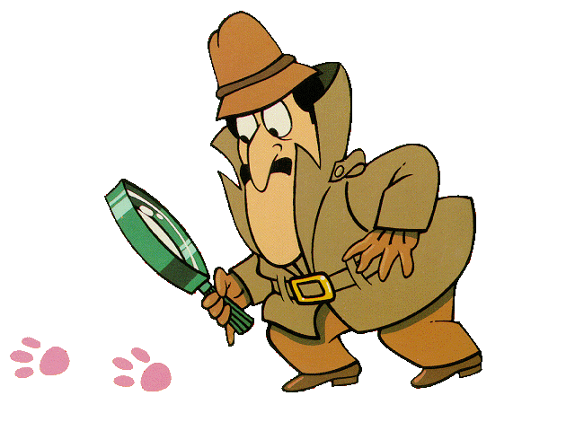
Bet kad kopiuteris tau padėtų - pirma turi išmokti su juo kalbėtis. Ši pamoka ir bus apie tai kur ir kaip kalbėtis su kompiuteriu.
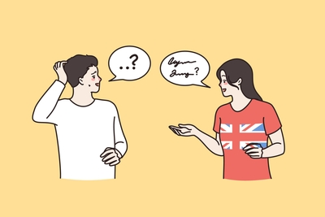
3 Terminalas
Atsidaryk programėlę “Terminal”, kurią rasi tarp visų programų. Nebijok, gali tekti paieškoti. Ar žinai, kaip greitai rasti programėlę?
- Spausk mygtuką su „Menu“ arba „Start“ piktograma.
- Naudok paieškos laukelį ir įvesk „Terminal“.
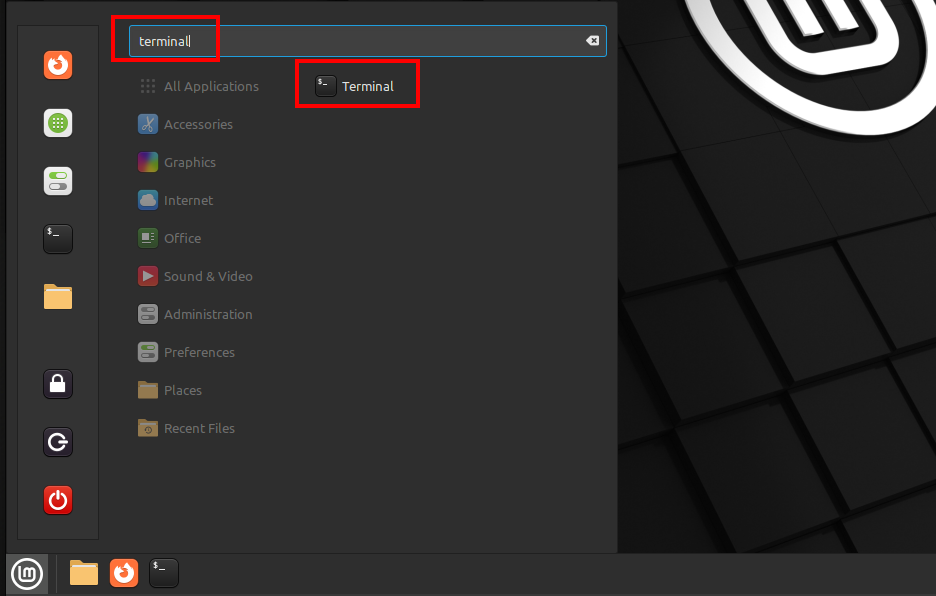
Bet tu gali ir tiesiog spustelti su pele ant piktogramos esančios šaila “Menu”
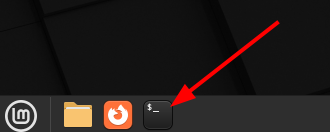
3.1 Pažink Terminalą
Tau atsidarys toks baisus juodas langas. Bet tau jo visai nereikia bijoti. Čia tik langas, per kurį gali bendrauti su kompiuteriu, pasakant jam, ką tu nori, kad jis padarytų.
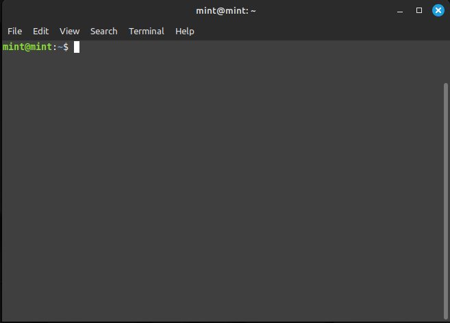
Terminalas yra speciali programa tavo kompiuteryje, panaši į žaidimų platformas kaip Roblox ar YouTube. Tačiau vietoje to, kad žaidžiame ar žiūrėtume vaizdo įrašus, į ją rašome komandas - įsakymus kompiuteriui.
Komandos yra būdas pasakyti kompiuteriui, ką jam daryti. Kadangi kompiuteris negali suprasti lietuviškai arba angliškai, jam reikia specialios kalbos. Viena iš tokių kalbų yra BASH.
BASH (tariasi beeš) yra speciali kompiuterinė kalba, kurią naudojame bendraudami su terminalo programa. Ji leidžia mums rašyti ir vykdyti įsakymus arba komandas, kad galėtume valdyti kompiuterį. Panašiai kaip žmonės kalba skirtingomis kalbomis (pvz., lietuvių arba anglų), BASH yra mūsų būdas bendrauti su kompiuteriu, leidžiantis mums atlikti daug įvairių veiksmų - nuo paprastų failų valdymo iki sudėtingesnių komandų vykdymo.
Kitaip tariant, BASH yra kalba, kuri leidžia mums parašyti ir suprasti komandas, kurios padeda mums dirbti su kompiuteriu ir atlikti norimus veiksmus per terminalą.

3.2 Pirma Komanda - echo
Pasiraitokime rankoves ir kibkime į darbą.
Pirmoji komanda (įsakymas kompiuteriui) bus - echo. Komanda echo atspausdina po jos sekantį tekstą.
Pabandykime pasisveikinti. Atkartok šią komandą terminale:
echo "Labas rytas"ir tada nuspausk Enter klavišą. iš tiesų jų yra net 2! Ir kartais jie dar vadinami return, nes senovinėse spausdinimo mašinose jie gražindavo (angl. - return) eilutę į praždią.
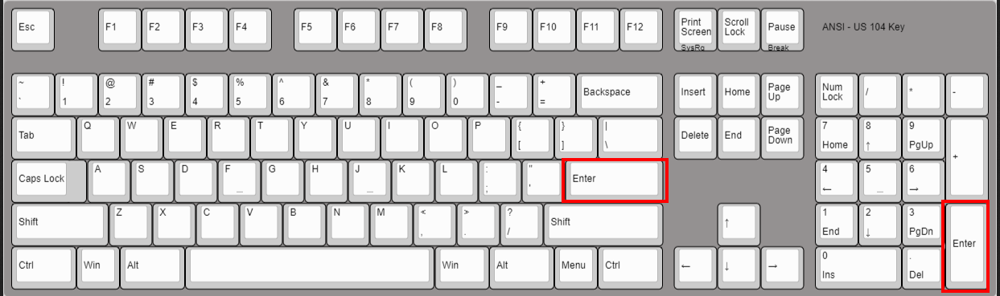
Ar pastebėjai, kas nutiko? Kompiuteris tave išgirdo ir pakluso tavo komandai.
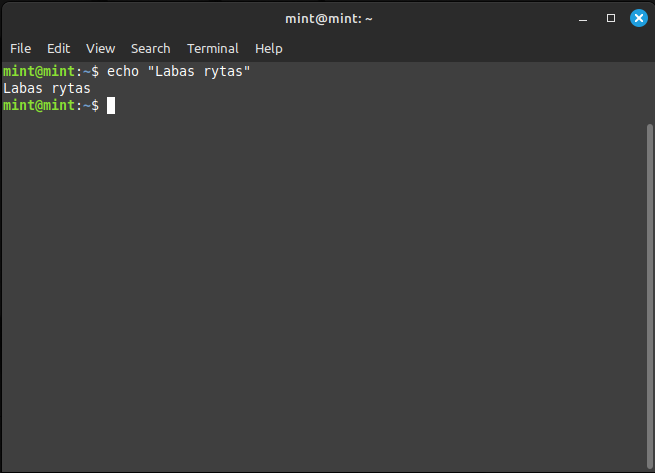
3.2.1 Kas čia yra Kas?
- Matai šitą dolerio ženklą
$? Jis angliškai vadinamaspromptir reiškia, kad kompiuteris yra pasirengęs gauti iš tavęs komandą ir laukia jos.
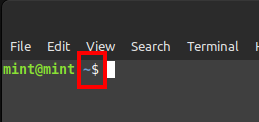
echoyra komanda, kuri priima tekstą ir jį atspausdina. Ji gali atspausdinti čia, ekrane (terminale), bet gali ir atspausdinti kažkur kitur, pvz., nukreipiant tekstą į kokį nors failą. Kaip komanda žino, ką spausdinti? Ji priimaargumentą.Argumentas– tai, ką tu pasirenki duoti tai komandai. Šiuo atveju argumentas yra tekstas tarp abiejų kabučių"Labas rytas".
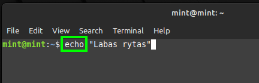
Argumentas– tarsi maisto produktas, kurį įdedi į maisto gaminimo įrenginį. Oecho– tarsi maisto gaminimo įrenginys, kuris tą produktą apdoroja ir pagamina kažką skanaus.
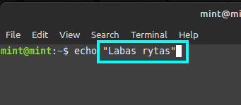
Kaip matai, sekančioje eilutėje nėra $ ženklo. Nes toje eilutėje kompiuteris atsakė tau :)
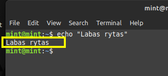
Kai jis tai padarė, vėl pasiruošė tavęs klausyti, nes paruošė kitą eilutę, kurioje paliko prompt ženklą - $ ir laukia naujos tavo komandos.
3.2.2 Challange:
Dabar visišai savarankiškai atspausdink žemiau pateiktą tekstą:
Labas rytas suraitytas, meškos koja parašytas!Pagalba:
- Naudok komandą
echo. - Tekstas turi būti apsuptas kabutėmis
"......". - Kad paleistum komandą – spausk
Enterklavišą.
3.3 Teksto nukreipimas į failą - >
Šaunu! Judam toliau… Dabar pabandysime tai, ką tau kompiuteris atspausdino į Terminal langą, nukreipti į failą. Ką tai reiškia? Tai reiškia, jog kompiuteris neatspaudins teksto Terminal lange, vietoj to, jis sukurs failą ir patalpins tavo norimą tekstą į jo vidų. Taip tavo tekstas gali būti išsaugotas. Išsaugoti angliškai - save.
Nukreipimas į failą įvyksta naudojant > simbolį. Po šio simbolio seka failo pavadinimas, į kurį nurime nukreipti tekstą. Tačiau šis simbolis yra galingas bet ir pavojingas! Jis sukuria failą, jeigu to failo dar nėra, bet jeigu failas tokiu pat pavadinimu jau yra, jis jį perrašo.
Pabandyk:
echo "Labas rytas, katine" > pasaka.txtechoyra komanda."Labas rytas, katine"yra argumentas skirtas echo komandai.>nukreipia tai, kas įvyko prieš tai į failąpasaka.txtyra failo pavadinimas, kurė sukuriame ir į kurį įrašome tekstą.
Jeigu viską padarei teisingai, tavo langas turėtų atrodyti taip:
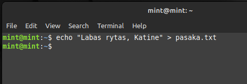
Kompiuteris ir vėl laukia tavo komandos. Bet kur atsirado failas?
3.4 Failų naršyklė - Files
Matai, kompiuteris įvykdė komandą ir vėl tavęs klauso! Bet kur nuėjo tas “Labas rytas, katine!”? Juk jo nėra Terminal lange? Kad rasti, atsidaryk naują programą, šį kartą paieškoje įvesk „Files“.
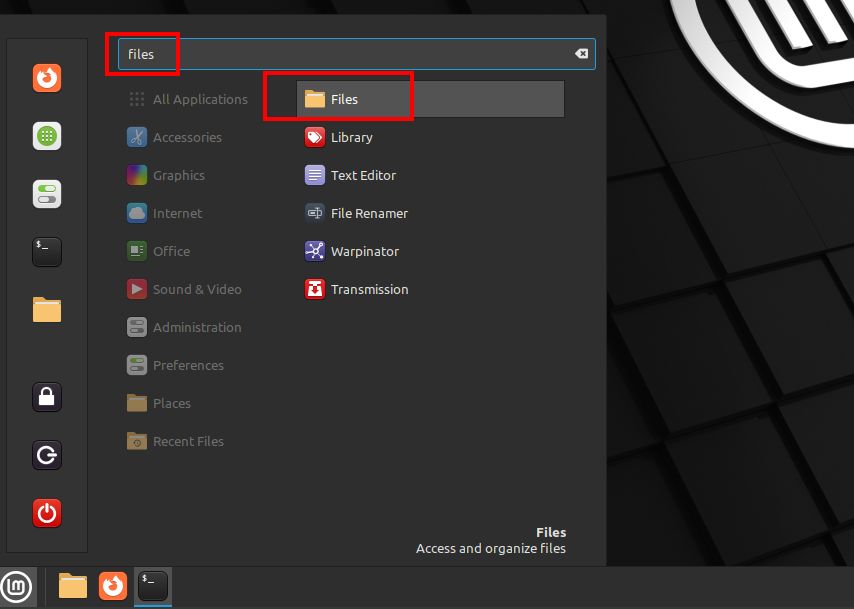
Tau atsidarė failų naršyklė, angliškai dažnai vadinama „File Explorer“.
Pažiūrėkime, ką čia matome…
- Matome daug aplankų: Desktop, Documents, Downloads ir jie atsikaroja dešinėje pusėje
- Bet štai ir failas pasaka.txt!
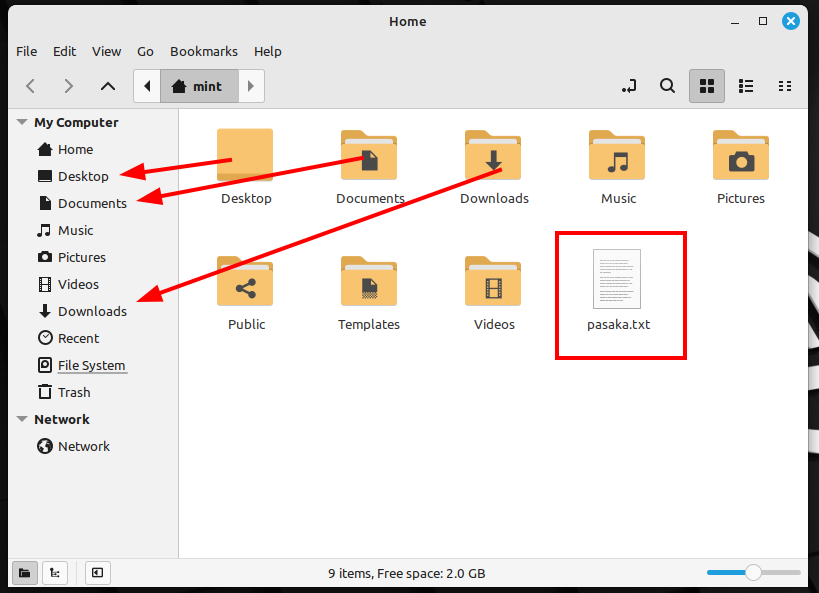
Paspausk ant pasaka.txt du kartus su pele, jis tau atsidarys su teksto redagavimo programa.
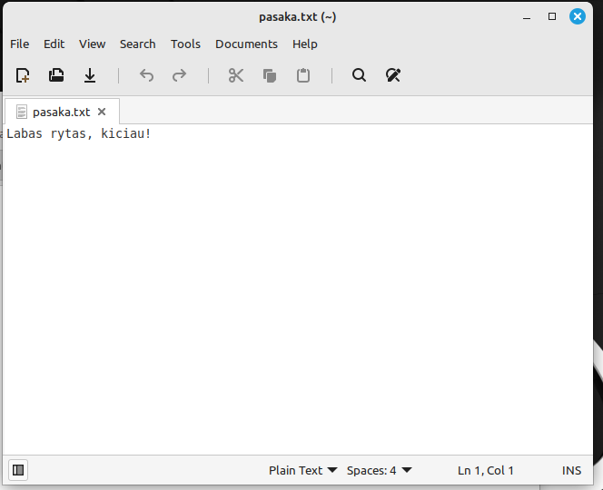
Uždaryk visus visus ir pasiruošk nedideliam challange!
3.4.1 Challange
- Iš naujo atsidaryk Terminal langą
- Naudojantis
echoir>išsaugok šį tekstą
Lietuva, Tėvyne mūsų Tu didvyrių žeme, Iš praeities Tavo sūnūs Te stiprybę semia.- Išsaugok tekstą faile pavadinimu himnas.txt
- Atsidary
Filesprogramą, rask himnas.txt - Atsidaryk failą ir patvirtink, jog iš tiesų išsaugojai Lietuvos himno pimąją eilutę.
3.5 Komanda - cat
Dabar tau gali kilti klausimas, o kodėl reikėjo atsidaryti šitą failą taip komplikuotai. Negi nėra paprastesnio būdo?
YRA!
Terminale įrašyk komandą cat ir perleisk jai argumentą – failo pavadinimą, kurį cat komanda turi perskaityti! Paspausk Enter klavišą.
cat pasaka.txtKą matai?
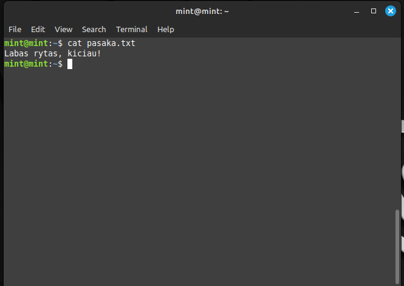
Nieko sau! cat komanda perskaitė tavo failą ir jį atspausdino Terminal lange. Tau nereikėjo eiti į Files susirasti ir atsidaryti failo. Tu viską gali padaryti Terminal lange.
3.6 Teksto nukreipimas į failą - >>
Pameni minėjau, jog > sukuria failą, jeigu jo nėra, o jeigu jis jau yra, tada perrašo jį. Dėl to ši komanda yra gana pavojinga.
Pabandyk nusiųsti šį tekstą į pasaka.txt
echo "Labas maužyle" > pasaka.txto tada atspausdinti pasaka.txt terminale:
cat pasaka.txtO ne, dingo prieš tai buves tekstas :(
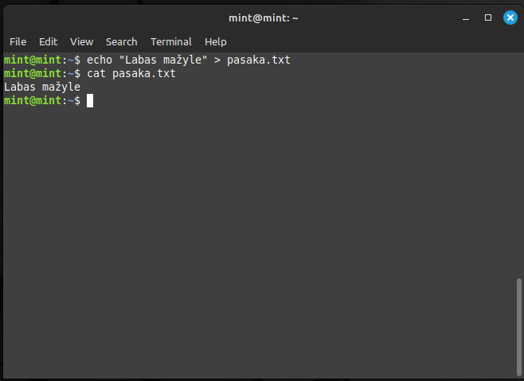
Tam kad neperrašyti failo, o tik pridėti naują eilutę failo apačioje, galima naudoti >> t.y. dvigubas >.
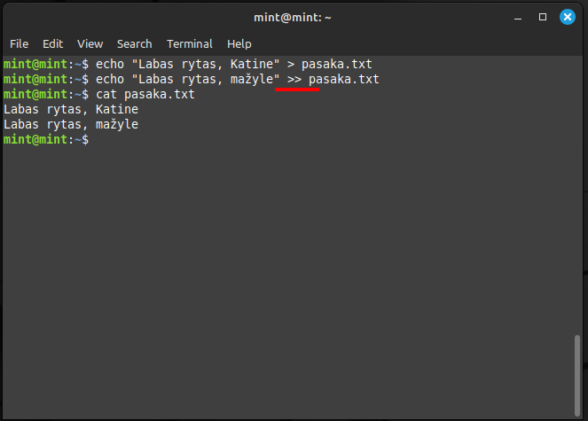
3.6.1 Challange
Praėjusiam challange tu įrašei pirmą Lietuvos himno posmą. Tad dabar antrojo posmo eilė:
Tegul Tavo vaikai eina Vien takais dorybės Tegul dirba Tavo naudai Ir žmonių gėrybei.- Pirma pasitikrink su komanda
catar tikrai turi failą himnas.txt ir ar jame tik pirmo posmo tekstas? - Naudojant echo ir
>>pridėk antro posmo tekstą - Su komanda
catpasitikrink ar tikrai abu posmai išsisaugojo. - Jeigu eilutės neatrodo gražiai pasidink terminalo langą ir pakartok komandą
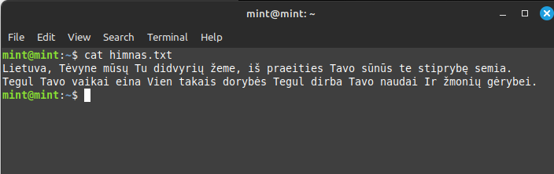
3.7 Naudingi klavišų trumpiniai (shortcuts):
Dvi komandos, kurias turi išmokti čia ir dabar:
- Paspaudus du klavišus vienu metu
CTRLirL, Terminal langas išsivalo ir tu nebematai senų komandų. - Kartais tu gali įrašyti kažką neteisingai, padaryti klaidą ir kompiuteris gali nesuprasti. Tada geriausia nuspausti
CTRLirCklavišus. Tai įpareigoja kompiuterį nutraukti tavęs klausymąsi, ištrinti tai, ką dabar darai, ir pradėti klausytis vėl iš naujo.
Pabandyk:
Pirma įrašyk echo “Labas rytas bet neužbaik teksto įvedimo, nepadėk kabučių ir spausk Enter. Dabar vietoj atspausdinto teksto arba vietoj prompt $ matai šitą ženklą >. Jis reiškia, kad kompiuteris laukia, kol tu pabaigsi įrašyt tekstą. Spaudžiant Enter – nieko nesigauna.
Nuspaudus CTRL + C nutrūksta komandos įrašymas.
Taip pat, jeigu žinai ko trūksta, šiuo atveju užaryti tekstą kabutėmis, gali įrašyti ir spausti Enter.
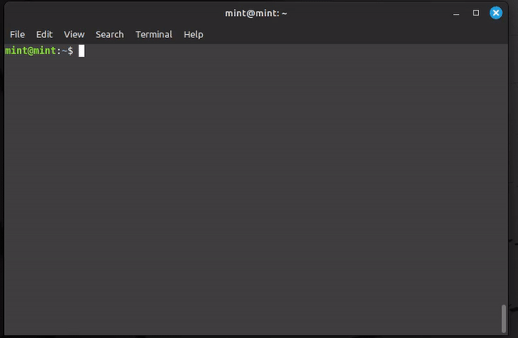
3.8 Slaptos Žinutės Dekodavimas:
Na štai, išmokai naudotis terminalu, žinai kas yra komanda, argumentas. Taip pat moki nukreipti tekstą į failą. Moki pakankamai, jog dekoduoti paslaptingą žinutę!
Pasinaudok komanda echo ir kaip jos argumentą įrašyk mano slaptą žinutę (su pele pažymėk visą kodą, paspausk dešinį pelės mygtuką ir spausk ant COPY). Tada terminale po echo ” su pele spausk ant terminalo, tada paspausk dešinį mygtuką ir spausk ant PASTE. Tačiau dar nespausk ENTER, nepamiršk, jog čia tekstas, kurį reikia uždaryti su “, kad jis niekur nepabėgtų :)
Išsaugok visa tai pasinaudodama > ir sukuriant failą pavadinimu kodas.txt.
Gali pasitikrinti, ar kodas.txt tikrai turi slaptą žinutę, pasinaudodama cat komanda ir perleisdama jai argumentą kodas.txt.
3.9 Šifravimo komanda - base64
Na, o dabar belieka pasinaudoti dar viena komanda:
Komanda base64 moka koduoti ir dekoduoti. -d yra parametras ir reiškia dekoduoti. kodas.txt yra argumentas, tavo anksčiau sukurtas failas, kurio viduje yra kodas.
- Parametras yra papildomas nustatymas komandai
base64. Įsivaizduok komanda būtų kaip įsakymas “Kepti orkaitėje”, o paramtetras “nustačius 200 laispnių temperatūrą”.
base64 -d kodas.txtAr pavyko dekoduoti mano žinutę?
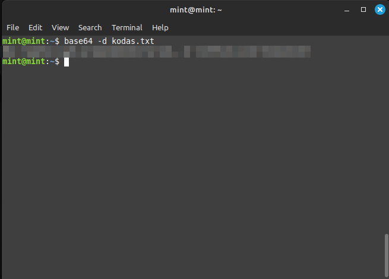
4 Žodynėlis
| Terminas | Apibrėžimas | Pavyzdys |
|---|---|---|
| Argumentas | Informacija arba duomenys, kuriuos perduodame komandai, kad ji galėtų atlikti savo veiksmą. | Komandoje echo "Labas rytas", tekstas "Labas rytas" yra argumentas. |
| BASH | Speciali kalba, kurią naudojame bendraudami su terminalu. | BASH leidžia mums rašyti komandas, kurias kompiuteris supras ir vykdys. |
base64 |
Komanda, kuri koduoja arba dekoduoja duomenis Base64 formatu. | base64 -d kodas.txt dekoduos failą kodas.txt iš Base64 kodo į tekstą. |
cat |
Komanda, kuri atspausdina failo turinį terminale. | cat pasaka.txt atspausdins failo pasaka.txt turinį terminale. |
| CTRL + C | Klavišų kombinacija, kuri nutraukia komandos vykdymą terminale. | Jei komanda užstrigo, paspaudus CTRL ir C, ji bus nutraukta. |
| CTRL + L | Klavišų kombinacija, kuri išvalo terminalo langą. | Paspaudus CTRL ir L, terminalo langas išsivalo nuo senų komandų. |
| Failų naršyklė (Files) | Programa, kuri leidžia naršyti ir tvarkyti failus kompiuteryje. | Failų naršyklė leidžia matyti failus ir aplankus, kuriuose jie yra saugomi. |
| Klaida (Error) | Pranešimas, kurį kompiuteris rodo, kai komanda neveikia arba yra neteisinga. | Jei parašai ech "Labas rytas" vietoj echo, gausi klaidos pranešimą, nes komanda ech neegzistuoja. |
| Komanda | Įsakymas, kurį rašome terminale, kad kompiuteris atliktų tam tikrą veiksmą. | echo yra komanda, kuri atspausdina tekstą terminale. |
| Parametras | Papildomas nustatymas, kuris keičia komandos veikimą. | -d parametras komandoje base64 -d kodas.txt nurodo, kad reikia dekoduoti failą. |
| Prompt | Simbolis ($), kuris rodo, kad terminalas yra pasirengęs priimti naują komandą. |
Kai terminale matai $, tai reiškia, kad gali rašyti naują komandą. |
| Terminalas | Speciali programa, leidžianti bendrauti su kompiuteriu rašant komandas. | Terminalas yra kaip pokalbių langas, kuriame gali rašyti komandas kompiuteriui. |
echo |
Komanda, kuri atspausdina tekstą terminale arba nukreipia jį į failą. | echo "Labas rytas" atspausdins tekstą “Labas rytas” terminale. |
> |
Simbolis, kuris nukreipia komandos išvestį į failą. | echo "Labas rytas" > pasaka.txt sukurs failą pasaka.txt ir įrašys į jį tekstą “Labas rytas”. |
>> |
Simbolis, kuris prideda komandos išvestį į esamo failo pabaigą. | echo "Labas rytas" >> pasaka.txt pridės tekstą “Labas rytas” į failo pasaka.txt pabaigą. |